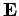
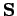
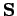
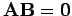
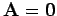
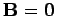
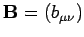
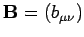

Rechenregeln für Matrizen
Die folgenden Regeln können nur angewendet werden, wenn die darin auftretenden Rechenoperationen durchführbar sind.
- 1. Die Multiplikation einer Matrix mit der Einheitsmatrix
-  wird wegen
auch identische Abbildung genannt.
- 2. Multiplikationen einer Matrix
 mit der Skalarmatrix  oder mit der Einheitsmatrix
mit der Skalarmatrix  oder mit der Einheitsmatrix
- sind kommutativ:
mit gemäß (4.8),
- 3. Multiplikation einer Matrix mit der Nullmatrix

- ergibt die Nullmatrix:
Die Umkehrung dieser Regel gilt im allgemeinen nicht, d.h., aus  folgt nicht notwendig  oder .
- 4. Verschwindendes Produkt zweier Matrizen
- Auch wenn weder noch
 Nullmatrizen sind, kann ihr Produkt eine Nullmatrix ergeben:
Nullmatrizen sind, kann ihr Produkt eine Nullmatrix ergeben:
- 5. Multiplikation dreier Matrizen:
-
- 6. Transposition von Summe und Produkt zweier Matrizen:
-
Für quadratische, invertierbare Matrizen  gilt außerdem:
gilt außerdem:
- 7. Inverse eines Produkts aus zwei Matrizen:
-
- 8. Potenzieren von Matrizen:
-
- 9. Kronecker-Produkt:
- Als KRONECKER-Produkt zweier Matrizen
 und  bezeichnet man die Vorschrift
und  bezeichnet man die Vorschrift
Bezüglich Transposition und Spur gelten die Regeln